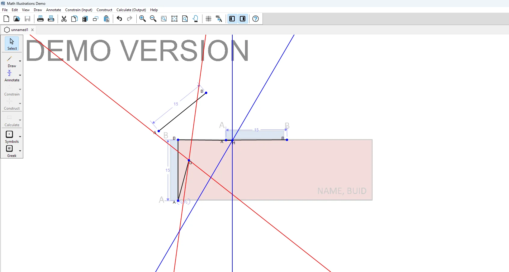
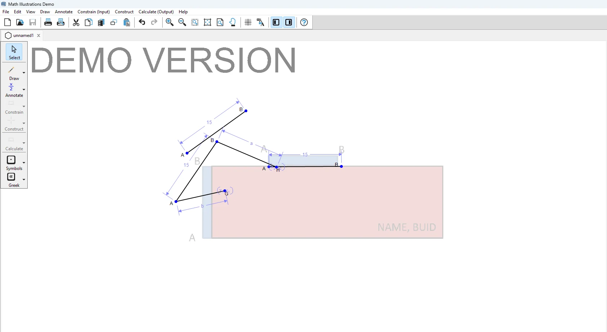

Shipping Container
Door Linkage.
Designed and simulated a four-bar mechanism that guides a door between the closed side position and its open rooftop position while avoiding interference with the shipping container.

Opening the door without crossing the container.
The assignment called for a door mechanism anchored to the side of a standard ISO shipping container. The mechanism had to move the door from a vertical closed position to a horizontal position above the roof, without the door or linkage passing through the container. I used a four-bar linkage approach and modeled the motion before building the CAD assembly.
Using geometry to locate the pivots.
- 01 — Define the two door positionsEstablished the required start and end orientations relative to the container side and roof.
- 02 — Construct linkage geometryUsed pivot locations, graphical analysis, and four-bar theory to explore candidate link lengths and fixed anchor points in Math Illustrations.
- 03 — Translate the layout to 3DBuilt the mechanism in SolidWorks with link HA at 1717.02 mm and link KB at 2331.90 mm.
- 04 — Check actual clearanceTested the door sweep and the spatial clearance of link connections and attachment hardware.

Solving interference in motion.
Door-to-roof interference
During early tests, the bottom of the swinging door came too close to the container and caught the roof edge. I varied the fixed pivot locations and door attachment points in the 2D simulation to find a clearer motion path.
Spacer-to-link interference
One early configuration required a spacer at pivot A. Although the bars could cross in the 2D sketch, the spacer occupied the same space as the other link in the 3D assembly. This highlighted the need to account for mounting hardware as well as idealized link geometry.
Final arrangement
I chose a configuration with pivot K on the top edge of the container and the moving links attached to the two door endpoints, A and B. The final SolidWorks motion study showed the door completing its required movement without interference.
From assignment to linkage geometry.
Linkage in motion.
SolidWorks assembly animation supplied with the project.
Verified in CAD
The final arrangement allowed the door to move between the specified positions without passing through or colliding with the container. It also incorporated clearance considerations that were not captured by the idealized planar linkage alone.
Open motion video ↗